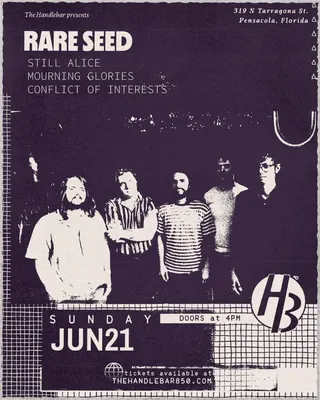
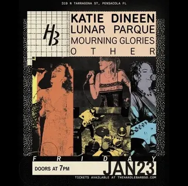
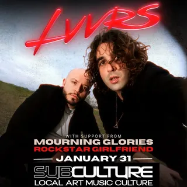
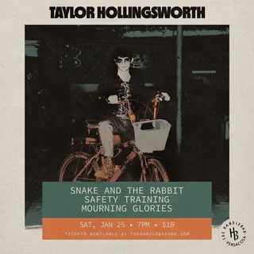
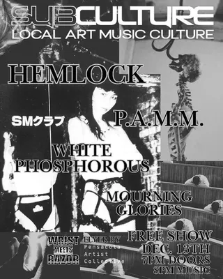

Mourning Glories
on tourtouring / out-of-town band
8 shows on the diypensacola record since 2024
on the record since July 2024, first seen at the bugghouse on a bill with glsnr and ballastella. most recently at the handlebar, June 2026.
- first playedJul 27, 2024 · the bugghouse
- most played atthe handlebar ×4 shows
- busiest year2025 · 4 shows
- biggest lineup4 acts · Jun 2026
flyer wall

Jun 21, 2026 · the handlebar
Jan 23, 2026 · the handlebar Sep 19, 2025 · the handlebar
Sep 19, 2025 · the handlebar Apr 1, 2025 · subculture
Apr 1, 2025 · subculture
Jan 31, 2025 · subculture
Jan 25, 2025 · the handlebar
Dec 13, 2024 · subculture Jul 27, 2024 · the bugghouse
Jul 27, 2024 · the bugghousepast shows
- 2026
- 21Jun 2026Rare Seed, Still Alice, Mourning Glories, Conflict Of Intereststhe handlebar
- 23Jan 2026Katie Dineen, Lunar Parque, Mourning Glories, Otherthe handlebar
- 2025
- 19Sep 2025Lights With Fire, Snow Halo, Mourning Gloriesthe handlebar
- 1Apr 2025Farseek, Mourning Glories, Outlook Bleak, Conflict Of Interestsubculture
- 31Jan 2025Lvvrs, Mourning Glories, Rockstar Girlfriendsubculture
- 25Jan 2025Safety Training, Taylor Hollingsworth, Snake And The Rabbit, Mourning Gloriesthe handlebar
- 2024
- 13Dec 2024Hemlock, Post Apocalyptic Murder Monkeys, White Phosphorus, Mourning Gloriessubculture
- 27Jul 2024Glsnr, Ballastella, Grave Chorus, Mourning Gloriesthe bugghouse
shared bills with
ballastellaconflict of interestconflict of interestsfarseekglsnrgrave chorushemlockkatie dineenlights with firelunar parquelvvrsother
act pages are built automatically from the show archive, so something may be off: a misspelled name, a missing link, the wrong type, or a bad local/touring call. no disrespect meant. wrong on any of that, or want a listen link (youtube or bandcamp) or live footage added? send it in.